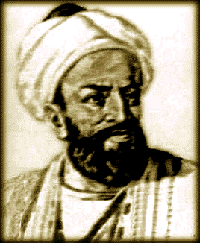

Ya'qub bin Ishak Al-Kindi Al-Kindi (lahir: 801 - wafat: 873), bisa dikatakan merupakan filsuf pertama yang lahir dari kalangan Islam. Semasa hidupnya, selain bisa berbahasa Arab, ia mahir berbahasa Yunani pula. Banyak karya-karya para filsuf Yunani diterjemahkannya dalam bahasa Arab; antara lain karya Aristoteles dan Plotinus. Sayangnya ada sebuah karya Plotinus yang diterjemahkannya sebagai karangan Aristoteles dan berjudulkan Teologi menurut Aristoteles, sehingga di kemudian hari ada sedikit kebingungan. Al-Kindi berasal dari kalangan bangsawan, dari Irak. Ia berasal dari suku Kindah, hidup di Basra dan meninggal di Bagdad pada tahun 873. Ia merupakan seorang tokoh besar dari bangsa Arab yang menjadi pengikut Aristoteles, yang telah memengaruhi konsep al Kindi dalam berbagai doktrin pemikiran dalam bidang sains dan psikologi. Al Kindi menuliskan banyak karya dalam berbagai bidang, geometri, astronomi, astrologi, aritmatika, musik(yang dibangunnya dari berbagai prinip aritmatis), fisika, medis, psikologi, meteorologi, dan politik. Ia membedakan antara intelek aktif dengan intelek pasif yang diaktualkan dari bentuk intelek itu sendiri. Argumen diskursif dan tindakan demonstratif ia anggap sebagai pengaruh dari intelek ketiga dan yang keempat. Dalam ontologi dia mencoba mengambil parameter dari kategori-kategori yang ada, yang ia kenalkan dalam lima bagian: zat(materi), bentuk, gerak, tempat, waktu, yang ia sebut sebagai substansi primer. Al Kindi mengumpulkan berbagai karya filsafat secara ensiklopedis, yang kemudian diselesaikan oleh Ibnu Sina (Avicenna) seabad kemudian. Ia juga tokoh pertama yang berhadapan dengan berbagai aksi kejam dan penyiksaan yang dilancarkan oleh para bangsawan religius-ortodoks terhadap berbagai pemikiran yang dianggap bid'ah, dan dalam keadaan yang sedemikian tragis (terhadap para pemikir besar Islam) al Kindi dapat membebaskan diri dari upaya kejam para bangsawan ortodoks itu.
|